"Urat Nadi Dunia Digital"
🌍 Pendahuluan: Kita Tidak Pernah Benar-Benar “Offline”
Coba bayangkan satu hari tanpa internet. Tidak ada WhatsApp, YouTube, atau Google, bahkan tidak bisa login CBT sekolah. Apa yang sebenarnya menghubungkan semua itu?
Jawabannya bukan sekadar “internet”, tetapi jaringan. Dan di dalam jaringan itu, ada satu komponen vital: ⚡ KABEL JARINGAN. Tanpa kabel jaringan, data tidak akan bisa berpindah dengan stabil, cepat, dan aman.
🔌 1. APA ITU KABEL JARINGAN?
📖 Definisi Sederhana: Kabel jaringan adalah media fisik yang digunakan untuk menghubungkan perangkat komputer agar bisa saling bertukar data.
Contoh Penggunaan: Komputer ke komputer, komputer ke router, router ke internet.
1. Kabel UTP (Unshielded Twisted Pair)
Ini adalah kabel yang paling sering kita temui di sekolah. Ciri-ciri: Warna biasanya biru, ujungnya pakai konektor RJ45, murah dan mudah dibuat sendiri.
✔ Kelebihan: Harga terjangkau, mudah dipasang, cocok untuk praktik siswa.
❌ Kekurangan: Jarak terbatas (±100 meter), mudah terganggu sinyal listrik.


2. Kabel Coaxial
Digunakan pada jaringan lama dan TV kabel:


3. Kabel Fiber Optic (FO)
Nah, ini yang paling menarik dan penting untuk masa depan:


💡 2. KABEL FIBER OPTIC – TEKNOLOGI MASA DEPAN
📖 Apa itu Fiber Optic?
Fiber Optic adalah kabel jaringan yang menggunakan cahaya untuk mengirim data, bukan listrik.
👉 Bayangkan:
Kabel biasa = kirim data pakai listrik
Fiber optic = kirim data pakai cahaya (super cepat)
⚡ Kenapa Harus Pakai Fiber Optic?
Mari kita bahas pelan-pelan, seperti cerita di kelas.
🚀 1. Kecepatan Sangat Tinggi
Fiber optic bisa mencapai: Mbps → Gbps → bahkan Tbps. Itulah kenapa WiFi rumah sekarang bisa 100 Mbps atau lebih.
📏 2. Jarak Jauh Tanpa Gangguan
UTP: ±100 meter | FO: bisa puluhan kilometer. Makanya FO dipakai untuk: Antar kota, Antar pulau, Bahkan kabel bawah laut!
🔒 3. Tidak Terpengaruh Gangguan Listrik
Kalau kabel biasa bisa terganggu: Petir, Mesin listrik, Tegangan tinggi. Fiber optic? 👉 Aman, karena pakai cahaya.
🔐 4. Lebih Aman
Sulit disadap karena: Tidak memancarkan sinyal listrik, Harus dipotong dulu untuk dibobol.
🌱 5. Lebih Tahan Masa Depan
Semua perkembangan jaringan sekarang: Internet cepat, Smart city, IoT. 👉 Semuanya butuh FO.
🛠️ 3. ALAT-ALAT YANG DIGUNAKAN PADA FIBER OPTIC
Sekarang kita masuk ke dunia teknisi profesional.
1. Fusion Splicer
Alat untuk menyambung kabel FO dengan presisi tinggi. 👉 Cara kerja: Ujung kabel dilelehkan; Disambung dengan cahaya.
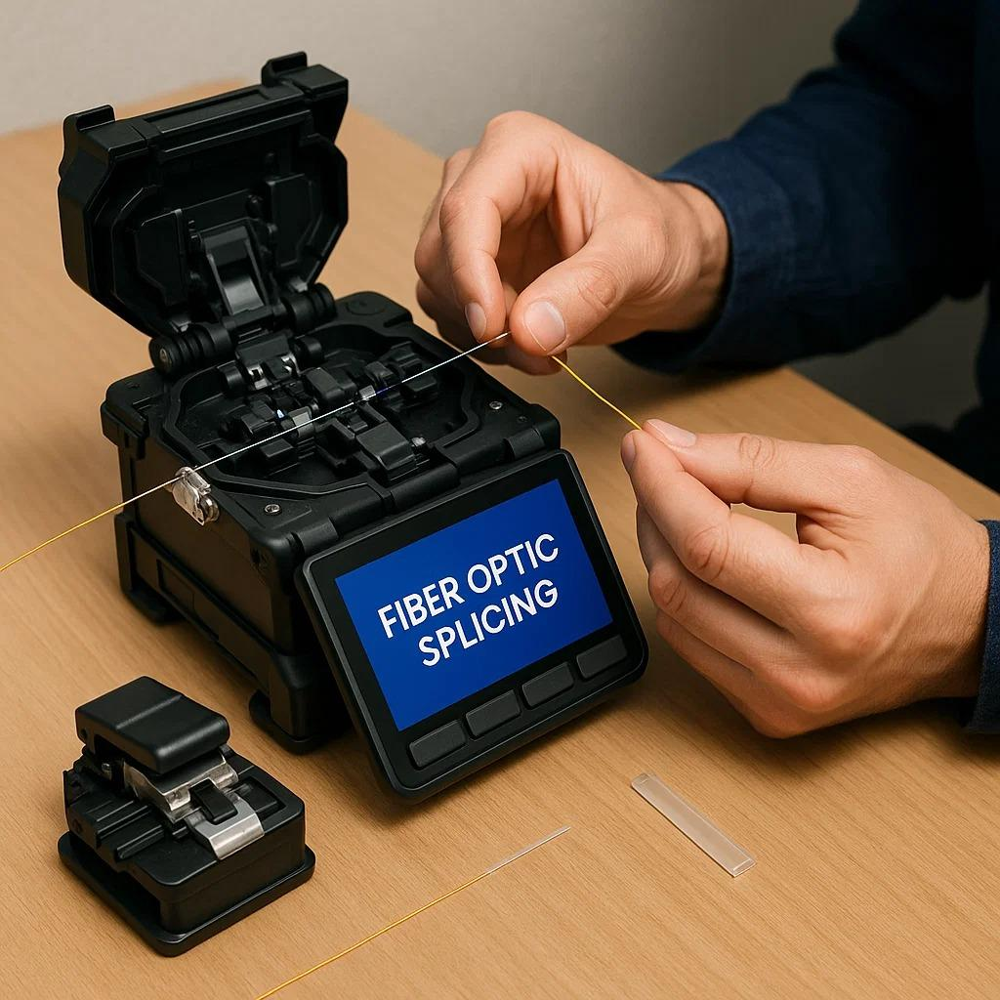
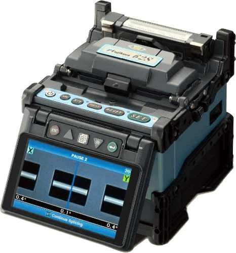
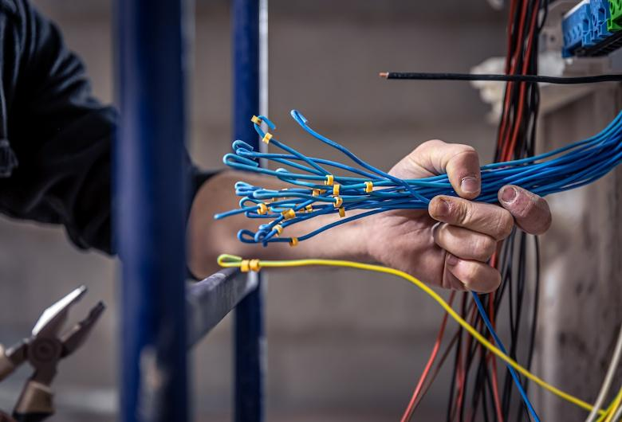
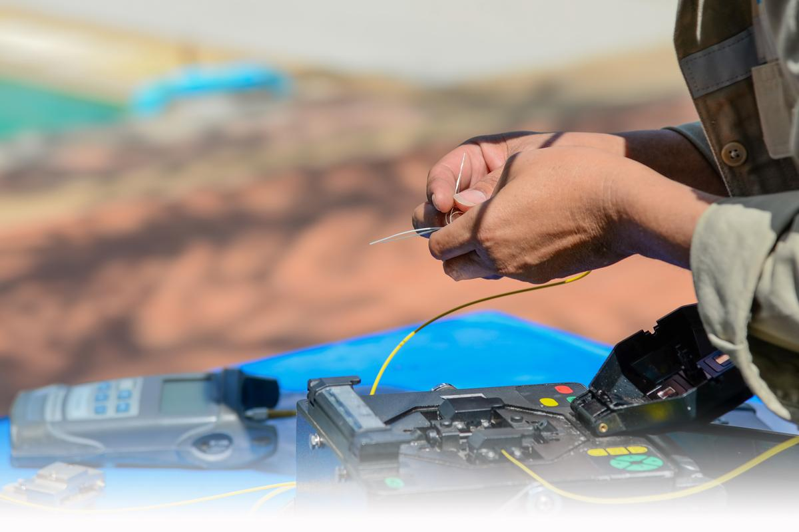
2. Fiber Cleaver
Untuk memotong kabel FO dengan sangat rapi sebelum disambung.
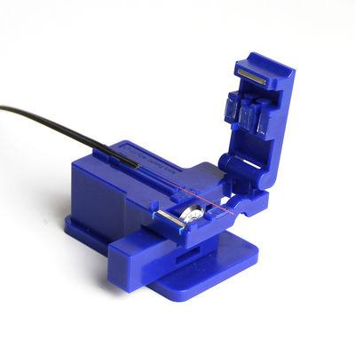
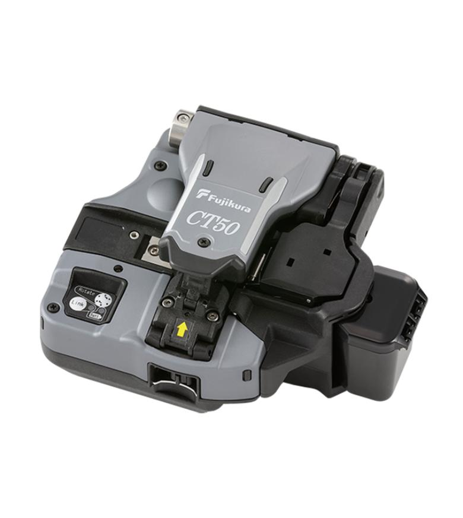
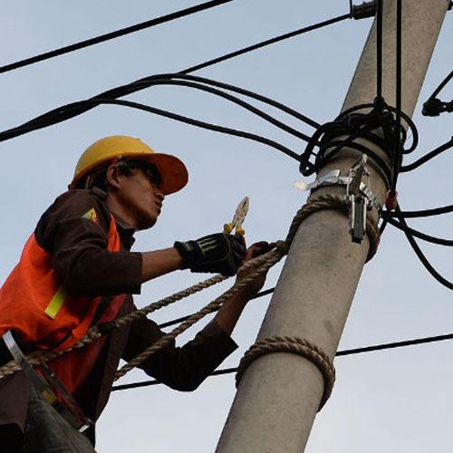
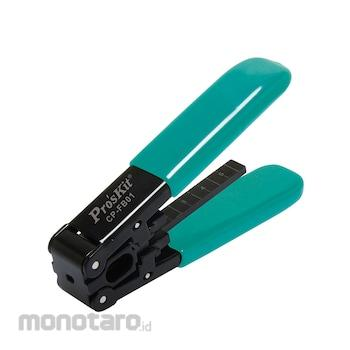
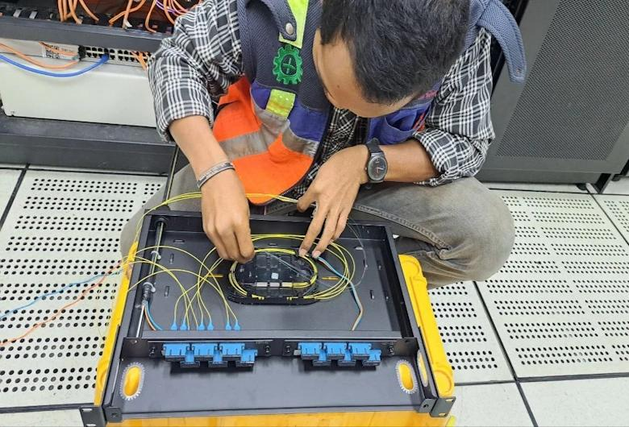
3. Optical Power Meter (OPM) & OTDR
OPM: Mengukur kekuatan sinyal cahaya. | OTDR: Mengetahui titik putus kabel dan mengukur jarak gangguan.
🔌 Media Converter / SFP Module: Digunakan untuk mengubah sinyal FO → LAN (UTP).
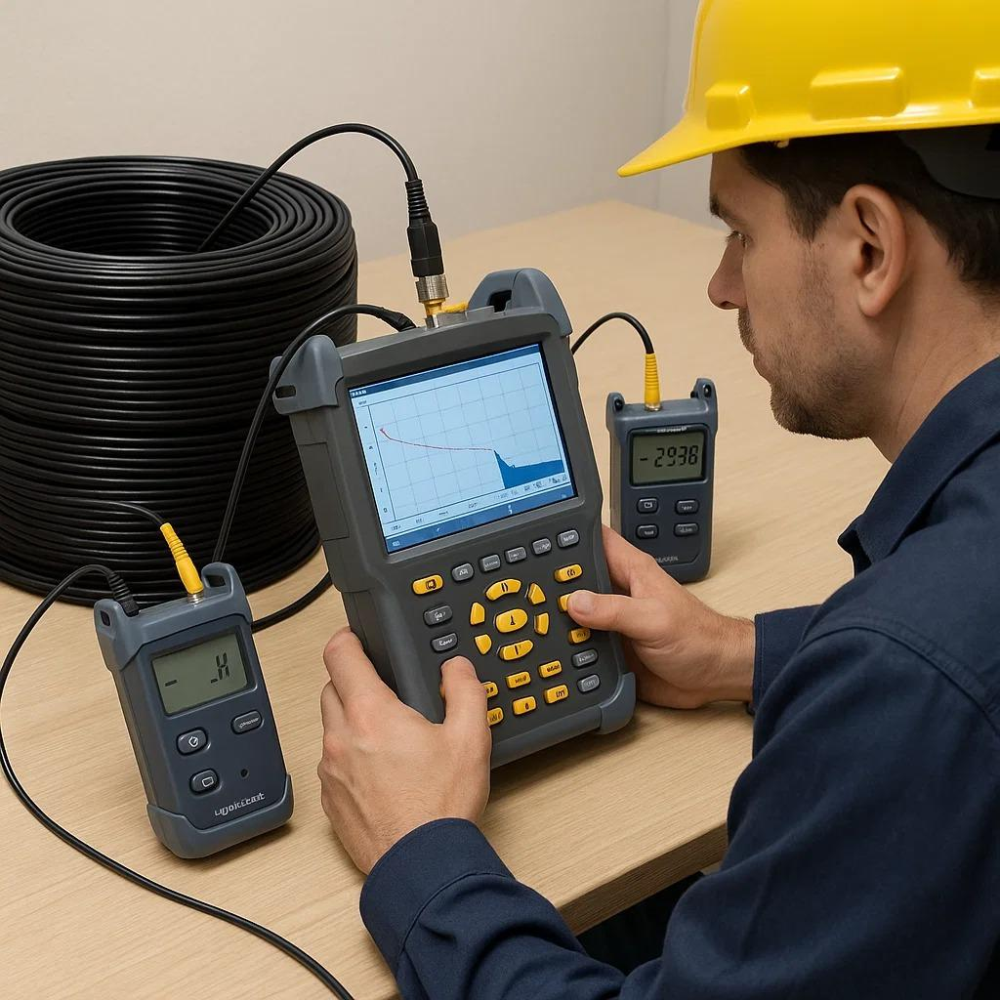
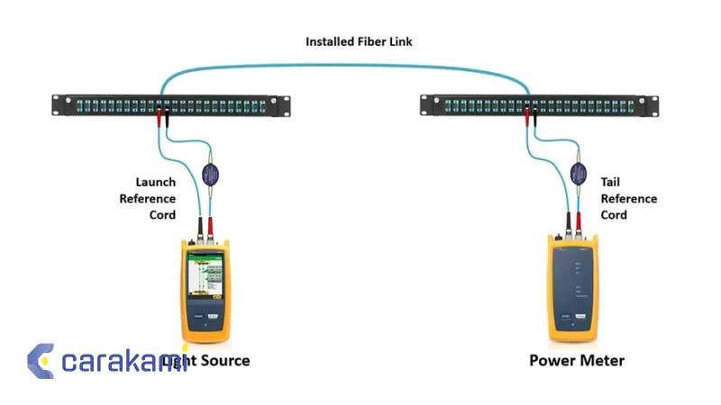
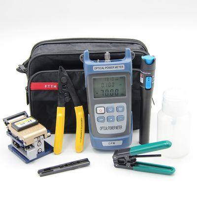
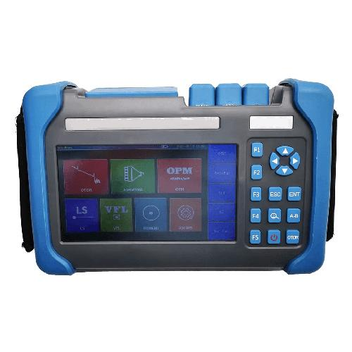